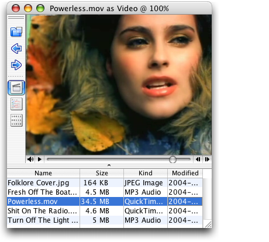
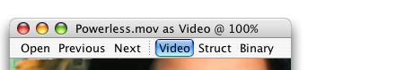
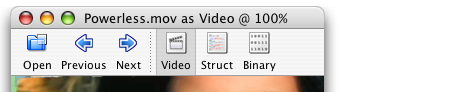
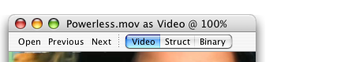

Property |
Type | Notes |
|---|---|---|
Quaqua.ToolBar |
java.lang.String |
Values: "plain", "title", "bottom", "gradient"
The |
Quaqua.ToolBar |
java.lang.Boolean |
If set to Boolean.FALSE, turns the divider line between the
toolbar and the center area of its panel off. |
The style of a toolbar provides a visual cue about its purpose.
* On Mac OS X 10.5 or newer, JToolBar's with the "title"-style fuse with the frame borders of the window, if the client property "apple.awt.brushMetalLook" is set on the JRootPane. JToolBar's with the "bottom"-style always fuse with the frame borders of the window.
Note that the window can be moved by dragging a fused toolbar.
Components added to a JToolBar inherit the style of the JToolBar. This may not always work, if components are first added to a JPanel, and then the JPanel is added to the JToolBar. In this case, it is necessary to set client properties on the components.
JToggleButton's on JToolBar's support the style toolBarTab.
This style is useful, when an application provides multiple views.
A floatable JToolBar on the left, containing three
JButtons, a JSeparator and three JToggleButtons. All buttons have an icon,
but no text. The JSeparator was created using method addSeparator of the
JToolBar.
Design Notice: Mac OS X applications usually do not use floatable tool bars, but use floating palette windows instead.

JToolBar toolBar = new JToolBar(); toolBar.setFloatable(true); ... toolBar.addSeparator();
JToggleButton videoButton = new JToggleButton(); videoButton.setIcon(anIcon); videoButton.setText(null); toolBar.add(videoButton); |
A non-floatable JToolBar placed on the
top, containing three JButtons, a JSeparator and
three JToggleButtons. All buttons have text only.

JToolBar toolBar = new JToolBar(); ... toolBar.addSeparator();
JToggleButton videoButton = new JToggleButton(); videoButton.setIcon(null); videoButton.setText("Video"); toolBar.add(videoButton);
|
A non-floatable JToolBar placed on the
top, containing three JButtons, a JSeparator and
three JToggleButtons.
All buttons have an icon and text placed below the icon. The JToggleButtons
use the client property Quaqua.Button.style set to toolBarTab.

JToolBar toolBar = new JToolBar(); toolBar.setFloatable(false); ... toolBar.addSeparator();
JToggleButton videoButton = new JToggleButton(); videoButton.setIcon(anIcon); videoButton.setText("Video"); videoButton.setVerticalTextPosition(SwingConstants.BOTTOM); videoButton.setHorizontalTextPosition(SwingConstants.CENTER); videoButton.putClientProperty( "Quaqua.Button.style", "toolBarTab" ); toolBar.add(videoButton);
|
A non-floatable JToolBar placed on the
top, containing three JButtons, a JSeparator and
three JToggleButtons. All buttons have text only, the font
is set to Lucida Grande 11 (the AHIG
"Small system font"). The JToggleButtons
use the client property Quaqua.Button.style to
create a "segmented control" look.

JToolBar toolBar = new JToolBar(); toolBar.setFloatable(false); ... toolBar.addSeparator();
Font smallSystemFont = new Font("Lucide Grande", Font.PLAIN, 11);
JToggleButton videoButton = new JToggleButton(); videoButton.setText("Video"); videoButton.setFont(smallSystemFont); videoButton.putClientProperty( "Quaqua.Button.style", "toggleWest" ); toolBar.add(videoButton);
JToggleButton structButton = new JToggleButton(); structButton.setText("Struct"); structButton.setFont(smallSystemFont); structButton.putClientProperty( "Quaqua.Button.style", "toggleCenter" ); toolBar.add(structButton);
JToggleButton binaryButton = new JToggleButton(); binaryButton.setText("Binary"); binaryButton.setFont(smallSystemFont); binaryButton.putClientProperty( "Quaqua.Button.style", "toggleEast" ); toolBar.add(binaryButton);
|